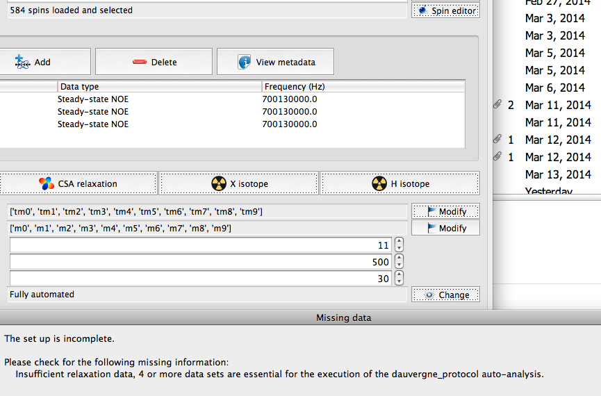

Hi Edward,
To test your Bruker DC files, please follow these steps:
- Start a new model-free analysis in the GUI.
- Load the spins from your PDB file.
- Click on the 'Add' button in the relaxation data list box which has
the Bruker logo. This is for reading these files.
- Check the relax controller window for any warning or errors.
I finally managed to go through the setup to a more advanced stage. In
particular, I have been able to load the T1, T2 and NOE projects from Bruker
Dynamic Center even though the format is different, as you indicate below. I
loaded the spins (N and H) for all the residues in the PDB file that contains
the homodimer, making sure that the number of molecules in the spin system
repository is two (I had to delete some of the molecules that were apparently
loaded multiple times, not sure why). The residues were complete there, while
I only have relaxation data for a smaller number of residues, so this does
not matter I discovered.
I then selected the fully automated mode, but the program now asks me for
more relaxation data sets, as you cans ee in the image below.
Any clues?
Stefano
[cid:942b2656-3742-4150-871e-e452d4c434fd@unibo.internal]

{kind=link}